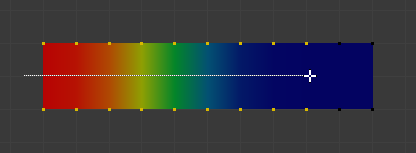

权重绘制工具¶
- 绘制
给目标绘制指定权重。
- 混合
笔刷 混合模式 定义绘制时权重值应用于顶点组的方式。
- 混合
在这种混合模式下，权重值定义了当鼠标在网格的相同位置上停留足够长的时间后，最终将达到的 目标权重 。 强度决定了你需要达到目标权重的次数。请注意，对于强度= 1.0，目标权重立即被绘制，而对于权重= 0.0，笔刷不做任何事情。
- 添加
在这种混合模式下，指定的权重值被 添加 顶点权重上。强度决定了每一个笔触添加权重的比率。但是，笔刷不会将权重值绘制在1.0以上。
- 减去
在这种混合模式下，是在顶点权重中 减去 指定的权重值。强度决定了每个笔触有多少权重被移除。但是，笔刷不会将权重值绘制在0.0以下。
- 变亮(Max[A，B])
在这种混合模式中，指定的权重值被解释为目标权重。非常类似于混合笔刷，但只有低于目标权重的权重受到影响。目标权重以上的权重保持不变。
- 变暗
此混合模式与淡化（Lighten）混合模式非常相似。但只有目标权重以上的权重受到影响。低于目标权重的权重保持不变。
- 正片叠底(相乘 A*B)
将顶点权重与指定的权重值相乘。这有点像减去，但是去除的权重现在取决于权重值本身。
- 模糊
平滑相邻顶点的权重。在这种模式下，权重值被忽略。通过强度定义平滑尺度。
- 模糊
平滑相邻顶点的权重。在这种模式下，权重值被忽略。通过强度定义平滑尺度。
- 平均
通过计算绘制笔刷下所有权重的平均值来平滑权重。
- 涂抹
通过“拖动”刷子下面的权重值来改变权重。这可以想象成一个手指绘画工具。
- 渐变
应用线性/辐射渐变，当绘制渐变权重困难时非常有用。将选定顶点的权重与未选定顶点混合。
渐变工具用于选定顶点的示例。¶
- 权重
从当前选中权重值开始渐变为零。
- 强度/力度
使用更低的值以便渐变与现有权重混合(就像使用画笔一样)。
- 类型
线性： Alt-LMB 并拖动。
辐射： Ctrl-Alt-LMB 并拖动。
- 采样
- 权重
设定笔刷 权重 为鼠标所选值。
- 顶点组
在鼠标下方显示顶点组列表。
- 标注
自由绘制线条。
- 直线标注
创建一条直线。
- 多边形标注
绘制一个多边形标注。
- 标注橡皮檫
擦除绘制的标注。